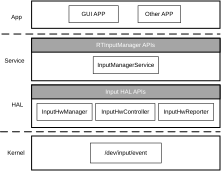
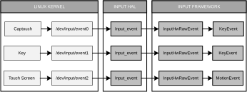

Overview
Input framework consists of an event pipeline that traverses multiple layers of the system. This chapter explains how the input framework pipeline works and the programming interfaces for user application. The following input devices are supported in current SDK.
Touch
Cap-touch
Key
Architecture
The input framework architecture is shown in the following figure.
{kind=link}

At the lowest layer, the Linux input device drivers are responsible for translating device-specific signals into a standard input event format, by way of the Linux input protocol.
Then the input HAL component manages the input device and report the raw input events via the registered callback to input manager service. The input manager service translate the Linux input protocol event codes into logical event codes according to the input device configuration and an event mapping tables.
Finally, the input manager service sends the logical input events to the registered application.
Linux input subsystem
Translates device-specific signals into a standard input event format.
Provides standard Linux input APIs to user space.
Input HAL
Input Device Manager manages input devices, including enabling and disabling input devices and obtaining the device list.
Input Controller controls input devices, including obtaining the device information and device type.
Input Reporter reports raw input events, including registering and unregistering data reporting callbacks.
Input Manager Service
Acquires the input device lists from input HAL.
Obtains the raw input event from input HAL.
Translates the raw input event into a logic input event.
Dispatches the input event to the registered clients
Data Flow
See the following figure for a depiction of the Input pipeline.
{kind=link}

There are three level layers of input event format in the Input framework.
Linux kernel input event data: input_event
Input HAL event data: InputHwRawEvent
Input Manager Event data: KeyEvent, MotionEvent
The Linux input device drivers translate device-specific signals into the standard format input_event, Input HAL filters input_event into InputHwRawEvent. The input manager service converts the InputHwRawEvent into KeyEvent or MotionEvent according to the type of the input event.
Linux Kernel Input Event data
In this section, <linux> means the kernel linux directory in sdk, which is <sdk>/kernel/linux-5.4 for kernel 5.4.x, and <sdk>/kernel/linux-6.6 for kernel 6.6.x. <dts_dir> means the directory of dts files, which is <sdk>/kernel/linux-5.4/arch/arm/boot/dts for kernel 5.4.x, and <sdk>/kernel/linux-6.6/arch/arm/boot/dts/realtek/ameba for kernel 6.6.x.
The Linux input device drivers translate device-specific signals into structure named input_event. Input HAL gets a whole number of input events by reading on the /dev/Input/eventX. Their layout is:
struct input_event {
struct timeval time;
unsigned short type;
unsigned short code;
unsigned int value;
};
Refer to Event interface and Input event codes for more information about input event and various even codes.
Input HAL Event Data
Input HAL component filters the structure input_event into InputHwRawEvent.
typedef struct {
nsecs_t when;
uint32_t device_id;
int32_t type;
int32_t code;
int32_t value;
} InputHwRawEvent;
InputHwRawEvent describes raw event as retrieved from Linux kernel.
when: Indicates when the event happened.
device_id: Indicates which input device report the event.
type: Indicates the type of input device, the supported types defined in InputHwDevType
code: Indicates the event code. A complete list is in
<linux>/include/uapi/linux/input-event-codes.hvalue: Indicates the event carries.
Input Manager Event Data
Input Manager supports two types of input events:
KeyEvent
MotionEvent
Event type |
Introduction |
|---|---|
MotionEvent |
The event report from touch screen driver. |
KeyEvent |
The event report from Cap-touch driver and key driver |
Every input event type provides the following information for user application.
Action: Indicate the event down/up information.
Value: The coordinate or key code.
Key Code Maps
There are two steps key code maps in the input frameworks.
Linux key code maps
RTInputManager key code maps
Linux Kernel Key Maps
The Linux input drivers is responsible for mapping the physical scan code got from GPIO pins to the Linux key codes. A Linux key code is a standard identifier for the keys. Linux key codes are defined in <linux>/include/uapi/linux/input-event-codes.h header file with the prefix KEY_.
Take the KEY_1 as an example, KEY_1 is used to represent the 1 key. When the key is pressed, an event with the key’s code is emitted with value 1, when the key is released, an event is emitted with value 0.
The default key codes of Cap-touch is defined in the DTS file: <dts_dir>/rtl8730e-captouch.dtsi
rtk,ctc-keycodes = <KEY_1>, <KEY_2>, <KEY_3>, <KEY_4>, <KEY_5>, <KEY_6>, <KEY_7>, <KEY_8>, <KEY_9>;
Customer can change the default Cap-touch key Code by modify the DTS file. For example, change the DTS file as
rtk,ctc-keycodes = <KEY_POWER>, <KEY_2>, <KEY_3>, <KEY_4>, <KEY_5>, <KEY_6>, <KEY_7>, <KEY_8>, <KEY_9>;
The key code of the first Cap-touch key will change to KEY_POWER in Linux input protocol.
Input Manager Key Code Maps
An RTInputManager key is the identifier defined in the input framework for indicating a particular key such as POWER. The key codes are defined in the header file <sdk>/sources/fwk/frameworks/input/interfaces/input/keycode.h as constants that begin with the prefix RTINPUT_KEYCODE_.
Interfaces
Overview
The input framework provides three layers of interfaces for user’s application from high layer to the lowest layer.
API |
Introduction |
|---|---|
Input Manager |
High-level API for applications to get input event. |
Input HAL |
Input Hardware Abstraction Layer API |
Linux Input Interface |
The standard linux input device - /dev/input/event |
It is suggested to use the high-level interfaces of Input Manager.
Linux Input Subsystem API
The Linux input subsystem provides standard interfaces for the user space to get the signals transported from the input drivers. The signals describes the input drivers’ status such as key presses and touch contact points and translated into the way of Linux input protocol.
Refer to Linux Input Subsystem userspace API to get more information.
Input HAL
Input HAL is the low level interface that interact with Linux input driver. It provide the input device management and raw input event handle functions. Input HAL includes the following interfaces:
Input Device Manager: Manages input devices, including enabling and disabling input devices and obtaining the device list.
Input Controller: Controls input devices, including obtaining the device information and device type
Input Reporter: Handle raw input events, including registering and unregistering event reporting callbacks.
Get Input Hardware Interface
Call GetInputHwInterface to get the hardware interface.
InputHwInterface *g_input_hw_interface;
int32_t ret = GetInputHwInterface(&g_input_hw_interface);
Use InputHwManager
InputHwManager provides interfaces for managing input devices. The interfaces can be used to perform basic operations on the input devices, such as scanning online devices, opening and closing the device files, querying information about a specified input device, and obtaining information about all input devices in the device list.
Scan Input Device
There are three steps to scan the input device.
Get the input hardware interface.
Call ScanInputDevice to scan input device.
ret = g_input_hw_interface ->input_hw_manager->ScanInputDevice();
Release the input hardware interface pointer when not use.
Get Input Device List
There are four steps to get input device list.
Get the input hardware interface.
Scan input device.
Call GetInputDeviceList to get input device list.
uint32_t num = 0; InputHwDeviceInfo** dev = (InputHwDeviceInfo **) malloc(sizeof(InputHwDeviceInfo*)); ret = g_input_hw_interface -> input_hw_manager->GetInputDeviceList(&num, dev, 1);
Release the input hardware interface pointer when not use.
Open Specified Input Device
There are six steps to open a specified input devices.
Get the input hardware interface.
Scan input device.
Get input device list.
Make sure the specified input device is existed.
Call OpenInputDevice to open a specified input device.
ret = g_input_hw_interface->input_hw_manage->OpenInputDevice(dev[0]->id);
Release the input hardware interface pointer when not use.
Close Specified Input Devices
There are six steps to open a specified input devices.
Get the input hardware interface.
Scan input device.
Get input device list.
Make sure the specified input device is existed.
Call CloseInputDevice to open a specified input device.
ret = g_input_hw_interface->input_hw_manage->CloseInputDevice(dev[0]->id);
Release the input hardware interface pointer when not use.
Use InputHwController
InputHwController provides interfaces to get the device status.
Get Device Status
There are 6 steps to open a specified input devices.
Get the input hardware interface.
Scan input device.
Get input device list.
Make sure the specified input device is existed.
Call GetDeviceStatus to open a specified input device.
ret = g_input_hw_interface->input_hw_manage->GetDeviceStatus(dev[0]->id,&status);
Release the input hardware interface pointer when not use.
Use InputHwReporter
InputHwReporter provides interfaces to handle the raw input event. The interfaces include the register and unregister of callbacks for reporting subscribed data of specified input devices, the register and unregister of the callbacks for hot plug in/out event of input devices.
Receive Hot Plug In/Out Event
There are five steps to receive the hot plug in/out event of input devices.
Get the input hardware interface.
Implement the hot plug event callback.
static void ReportHotPlugEventPkgCallbackFunc(InputHwHotPlugEventType type) { if (type == INPUT_HW_DEVICE_ADDED || type == INPUT_HW_DEVICE_REMOVED) { //Scans input device (must) //Gets device List (must) //Implement the operation of hot plug event (optional) } }
Call RegisterHotPlugCallback to register the hot plug callback function.
hot_plug_event_cb = (InputHwHotPlugEventCallback*) malloc(sizeof(InputHwHotPlugEventCallback)); hot_plug_event_cb->ReportHotPlugEvent = &ReportHotPlugEventPkgCallbackFunc; ret = g_input_hw_interface->input_hw_reporter->RegisterHotPlugEventCallback(hot_plug_event_cb);
Call UnregisterHotPlugCallback when the callback function is not used.
g_input_hw_interface->input_hw_reporter->UnregisterHotPlugEventCallback(); free(hot_plug_event_cb); hot_plug_event_cb = NULL;
Release the input hardware interface pointer when it not used.
Receive Raw Input Event
There are eight steps to receive the raw input event of input devices.
Get the input hardware interface.
Implement the raw data event callback.
static void ReportEventPkgCallbackFunc(const InputHwRawEvent *events, uint32_t count) { if (events == NULL) { return; } }
Scan input devices.
Get device list.
Make sure the specified input device is existed.
Call RegisterRawEventCallback to register the raw data event callback to the specified input device.
raw_event_cb = (InputHwRawEventCallback*) malloc(sizeof(InputHwRawEventCallback)); raw_event_cb->ReportRawEvent = &ReportEventPkgCallbackFunc; ret = g_input_hw_interface->input_hw_reporter->RegisterRawEventCallback(g_dev_list[0]->id, raw_event_cb);
Call UnregisteRawEventCallback when the callback function is not used.
g_input_hw_interface->input_hw_reporter->UnregisterRawEventCallback(g_dev_list[0]->id); free(raw_event_cb); raw_event_cb = NULL;
Release the input hardware interface pointer when it not used.
Release Input Hardware Interface
Release the input hardware interface when it not use, the sample code is as below:
ReleaseInputInterface(g_input_hw_interface);
g_input_hw_interface = NULL;
Input Manager
Input Manager is the high-level interface for application to register an input event callback. It interaction with InputMangerService to dispatch the logical input event to registered application. InputMangerService runs at background when system started. It continues to obtain raw input event from input HAL and translate it to a logical input event via a mapping table.
Get Input Events
RTInputEventListener contains two callback methods:
void (*OnKeyEvent) (const RTInputKeyEvent* key_event): called when the user presses and releases the key or Cap-touch.
void (*OnMotionEvent) (const RTInputMotionEvent* motion_event): called when the user presses and releases the touch screen.
In order to get the input events, there are several steps as follow:
Use RTInput_CreateManager to get the Input Manager.
struct RTInputManager* manager = RTInput_CreateManager();
Implement the input event listener.
void OnKeyEventImpl(const RTInputKeyEvent* event) { //to be implemented } void OnMotionEventImpl(const RTInputMotionEvent* event) { //to be implemented }
Use RTInput_RegisterListener to register the input event listener.
RTInputEventListener listener; listener.OnKeyEvent = &OnKeyEventImpl; listener.OnMotionEvent = &OnMotionEventImpl; RTInput_RegisterListener(manager,listener);